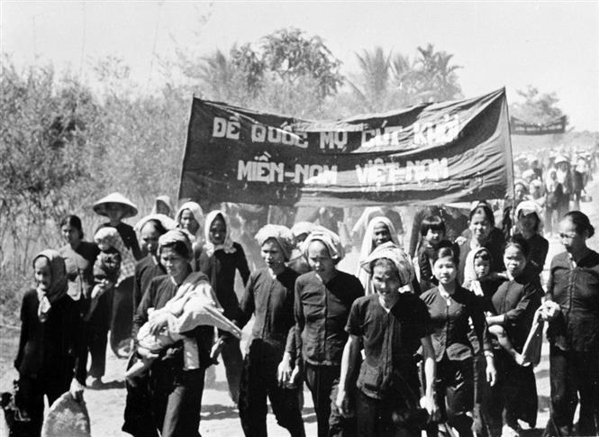
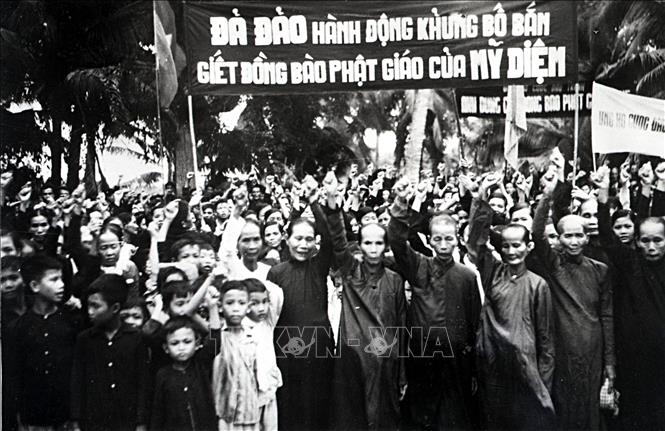

THÔNG TIN LIÊN HỆ
IG:BenTre_VNPhone:+84987654321
Gmail: Bentrevn@gmail.com.vn
TRA CỨU THÔNG TIN
Địa chỉ: 7A Đồng Khởi, phường An Hội
Điện thoại: 0987654321
- Ngày 17-1-1960: Cuộc đồng khởi của đồng bào Bến Tre. Cách đây 62 năm, ngày 17-1-1960, dưới sự lãnh đạo của tỉnh ủy Bến Tre, nhân dân các xã Định Thủy, Phước Hiệp, Bình Khánh thuộc huyện Mỏ Cày đã nổi dậy đánh đồn bốt, diệt ác ôn, giải tán chính quyền địch, giành lấy quyền làm chủ thôn xã. Đây cũng là lần đầu tiên xuất hiện “Đội quân tóc dài” trong phong trào “Đồng khởi”. Từ ba xã trên, cuộc nổi dậy lan ra toàn huyện Mỏ Cày và tỉnh Bến Tre, trở thành cao trào “Đồng khởi” như nước vỡ bờ nổ ra khắp Nam Bộ, Tây Nguyên và một số nơi ở miền Trung Trung Bộ. Tính đến cuối năm 1960, cả miền Nam có 2.627 xã, người dân đã giành quyền tự quản ở 1.383 xã. Số dân ở vùng giải phóng khoảng 5,6 triệu người.
 - Phong trào Đồng khởi 1960 ở Bến Tre đã mở ra cục diện mới triển vọng cho cách mạng miền Nam, góp phần tạo ra một bước ngoặt chiến lược, đưa cách mạng miền Nam từ thoái trào, từ thế giữ gìn lực lượng chuyển hẳn sang thế tiến công chiến lược, làm rung chuyển và báo hiệu sự sụp đổ của chế độ Mỹ - ngụy. Thắng lợi của cuộc Đồng khởi ở Bến Tre còn là thắng lợi có ý nghĩa chính trị lịch sử sâu sắc, ghi đậm mốc son lịch sử trong sự nghiệp đấu tranh giải phóng dân tộc nói chung và của nhân dân Bến Tre nói riêng. Chiến công đó của Đảng bộ và nhân dân Bến Tre được cả nước ghi nhận. Đại tướng Hoàng Văn Thái, Ủy viên Ban Chấp hành Trung ương Đảng, Ủy viên Thường trực Đảng ủy Quân sự Trung ương đã khẳng định: “Phong trào Đồng khởi 1960 là mô hình hoàn chỉnh của khởi nghĩa toàn dân, của khởi nghĩa nông thôn đồng bằng. Nó thúc đẩy toàn Nam bộ nổi dậy chống Mỹ cứu nước với khí thế long trời lở đất. Vì vậy, Bến Tre là quê hương của Đồng khởi theo đúng nghĩa của Đồng Khởi…”.
Địa chỉ: 7A Đồng Khởi, phường An Hội
Điện thoại: 0987654321